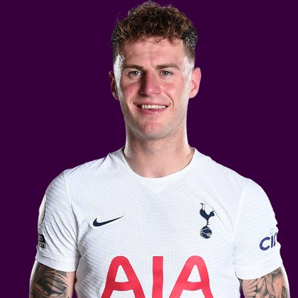

PITCHKEEP
Premier League ranks
Player File · DEF LEE · Premier #155

Joe Rodon
DEF · Leeds · age 28 · £4.5m
2025/26 Premier League
| Year | Starts | Min | G | A | xG | xA | CS | GC | Bonus | YC | Sleeper | FPL |
|---|---|---|---|---|---|---|---|---|---|---|---|---|
| 2025/26 | 33 | 2952 | 2 | 0 | 1.4 | 0.56 | 6 | 53 | 5 | 3 | 75.8 | 109 |
Plus
- 75.8 Sleeper BPL 2025 points (Pitch #187).
- 2952 minutes, 33 starts. Availability is a skill.
- Consensus 115.27 vs Sleeper #187 — the industry still believes more than 2025/26 counted.
Minus
- 53 goals conceded. Sleeper taxes defenders and keepers −2 a goal.
- Board spread 96–225 (SofaScore mix to FPL xGI).
PitchKeep Take · The Premier
Joe Rodon is a defender for Leeds, age 28, £4.5m. The Premier ranks him 155th overall by splitting Sleeper BPL 2025 (#187, 75.8 points) with the consensus of 15 other boards (115.27). The industry still has him 72 spots ahead of the 2025/26 Sleeper count. The Premier pays that reputation something, not everything. Brand does not outrun a down year, and a down year does not erase a player Leeds still builds around.
The 2025/26 Premier League line is 33 starts and 2952 minutes, 2 goals and 0 assists, 6 clean sheets, 53 goals against, 37 tackles and 237 CBI. Official FPL scored it at 109 points (3.1 per match) with 5 bonus. Sleeper's table turned the same counting stats into 75.8. Defenders get 10 a goal, 7 an assist, 6 a clean sheet, and −2 a goal against. CBI at 0.4 and tackles at 1 are how a centre-back cracks the overall 50.
Underlying: 1.4 xG, 0.56 xA, 1.96 xGI. The defensive events are the floor: 37 tackles, 237 clearances/blocks/interceptions, 6 shutouts. Sleeper is built to notice that. ICT and xGI boards are not, which is why a centre-back's spread on this desk is usually ugly and still informative. The friendliest board is SofaScore mix at 96; the coldest is FPL xGI at 225.
Market: £4.5m, 2.9% owned into the 2026/27 FPL start, 16 boards on the file. That ownership is a leftover. Either the public missed a real season or the public correctly decided the role is not repeatable. The Premier's rank is our vote. If we have him inside the first 80 and they have him at 0.4%, that is a Sleeper buy. FPL's own EP-next is 1.7. ICT 109.1.
Instruction: he is on the 400, which is already a statement, and he is not a star. Stash in Sleeper if the minutes are real. Do not let a Pitch screenshot make you start him over a Premier top-80. Nearby on The Premier: Jack Grealish, Amadou Onana, Callum Hudson-Odoi. Versus The Pitch (Sleeper-only #187), the hybrid moves him up to #155. That move is the third list doing its job.
He is 28, which on this desk is neither a dart nor a warning label. Prime-age defenders get ranked on what they just did and whether Leeds still gives them the ball. 2952 minutes says yes. The 2026/27 FPL price (£4.5m) is the app's guess at whether that continues. The Premier is the blend of that guess and the box score.
Full-backs and centre-backs separate on this desk by attacking events. 2 goals and 0 assists are how a defender outruns his GA column. Without those, you are betting 6 clean sheets and the CBI stream (237) against 53 goals against at −2 a piece. Leeds's 2026/27 defensive shape is therefore half of this player's rank. The other half already happened, across 33 starts.
How to use the file: The Pitch is the Sleeper-only 400 (he is #187 there). The Premier is the 50/50 with every other board we track. Attack, Midfield, Defence, and Keepers re-rank the same Sleeper table by position. BK Value on this page follows The Premier when you are on the hybrid calculator and The Pitch when you are on the Sleeper calculator. Same curve either way — 12,000 at 1.01. Unranked sources are skipped, never treated as 999, which is why a player missing from Yahoo's XI is not secretly ranked 400th.
Sleeper vs FPL
Same 2025/26 line, two scoring tables
Board graph
Spread 96–225 · 16 sources
Tape · 2025/26 Premier League
Joe Rodon's header brings Leeds level with Bournemouth | Premier League | NBC Sports
Every Board
Spread 96–225 · 16 sources
| Source | Rank |
|---|---|
| SofaScore mix | 96 |
| Fantasy Football Scout lean | 105 |
| FPL 2025/26 Points | 107 |
| FPL GW1 Ownership | 107 |
| Sky Sports FPL | 107 |
| FPL Draft | 107 |
| LiveFPL community | 107 |
| FPL ICT Index | 108 |
| WhoScored PL | 108 |
| BBC Sport FPL | 109 |
| Understat xG lean | 109 |
| Planet FPL | 109 |
| The Athletic FPL | 111 |
| ESPN FPL | 114 |
| Sleeper BPL 2025 | 187 |
| FPL xGI | 225 |
On The Premier nearby — Jack Grealish (#153) · Amadou Onana (#154) · Callum Hudson-Odoi (#156) · Karl Darlow (#157)